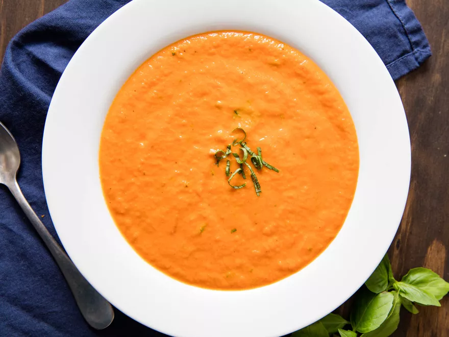

Tomato Soup

Description
This tomato soup is amazing. The carrot purée adds an earthy sweetness to
balance out the acidity of the tomatoes, and creates a creamy consistency
without the need for much cream.
Ingredients
- 4 ounces unsalted butter (1 stick; 114g)
- 4 large carrots (1 pound; 455g), diced (see note)
- 2 medium yellow onions (1 pound; 455g), diced (see note)
-
3 large (28-ounce; 795g) cans whole tomatoes, crushed roughly by hand
- 4 cups (950ml) homemade or store-bought low-sodium chicken stock
- 1/4 teaspoon baking soda, plus more as needed (optional)
- 8 ounces heavy cream (1 cup; 225g)
- Up to 1 1/4 teaspoons (5g) Diamond Crystal kosher salt
- 1/2 teaspoon (1g) freshly ground black pepper, or more to taste
- 1/8 teaspoon ground cayenne, or more to taste
-
1/2 ounce fresh basil leaves (1 loosely packed cup; 15g), cut into
chiffonade
Directions
-
In a 6-quart stainless steel pot, melt butter over medium heat until
foaming
-
Add carrots and onions. Cook, stirring occasionally until butter starts
to brown on the bottom, about 15 minutes.
-
Add tomatoes, followed by chicken stock. Continue cooking, stirring
occasionally, until quite thick, about 1 1/2 hours; adjust heat as
needed to maintain a gentle simmer.
-
Taste broth; if its flavor is too sharp or acidic, add 1/4 teaspoon
baking soda and stir well (it will foam at first). Taste and repeat if
needed. Purée soup with an immersion blender until smooth, or cool until
no longer steaming before puréeing in a countertop blender. Stir in
cream, then season with salt, pepper, and cayenne to taste. Rewarm to
serve. Stir in basil just before serving. In a sealed nonreactive
container, tomato soup will keep up to 1 week in the refrigerator or 6
months in the freezer.